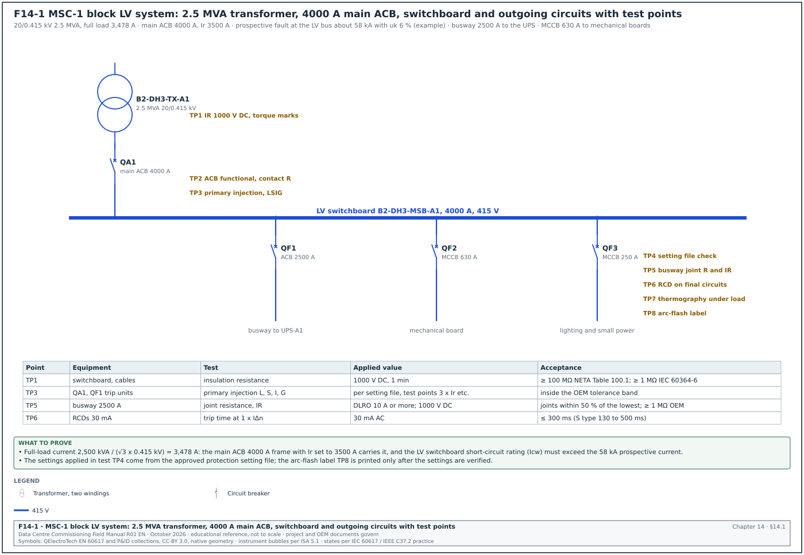
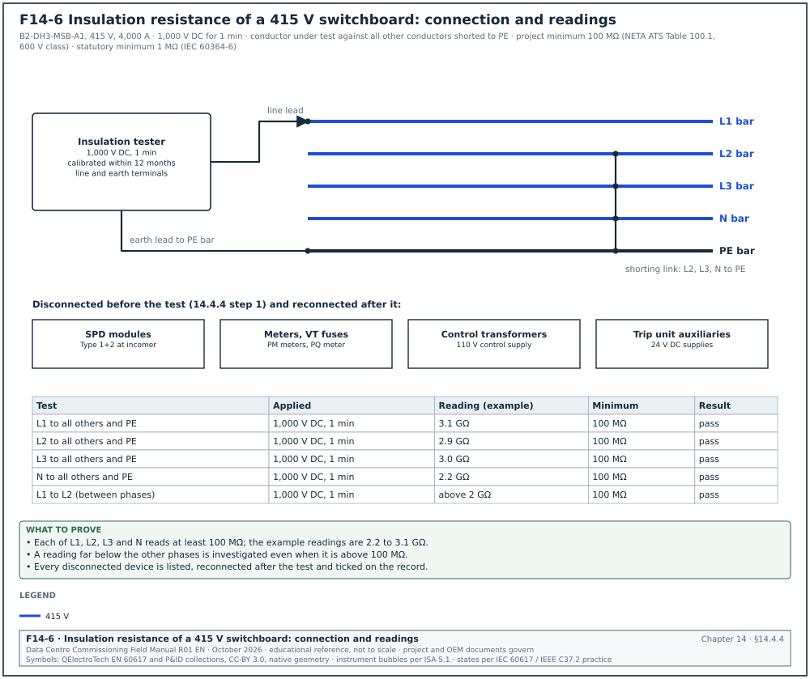
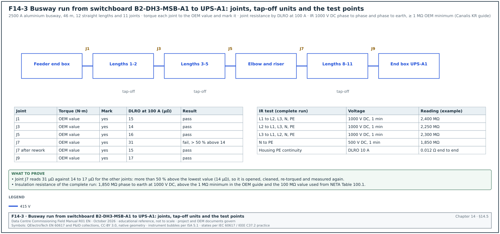
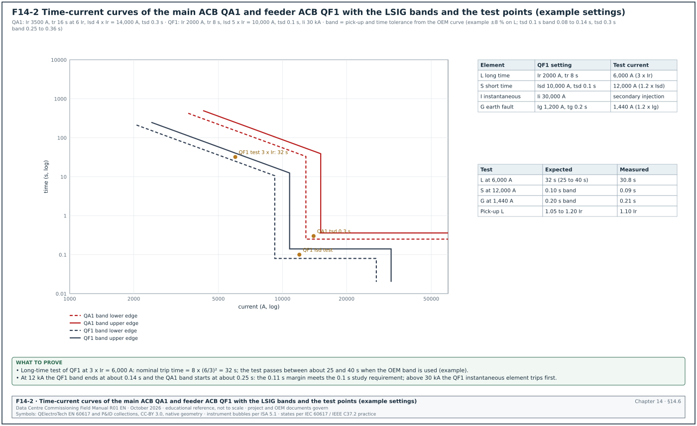
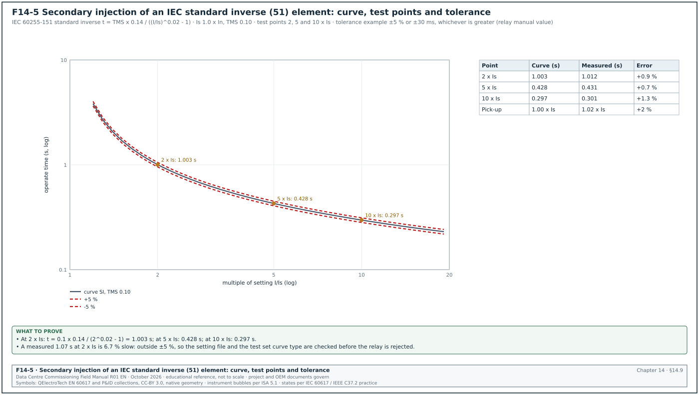
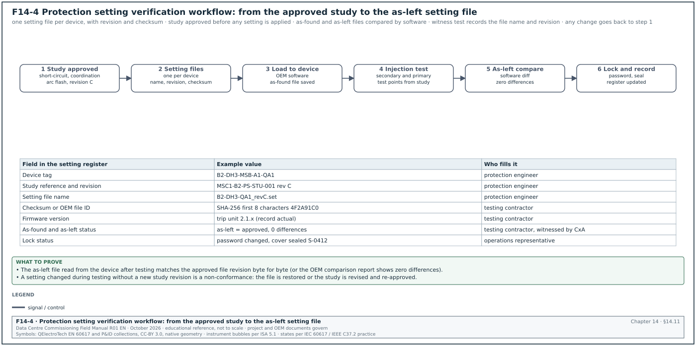

14.0Scope of this chapter
This chapter covers the site acceptance tests of the low-voltage (LV) distribution of a data-centre campus. The equipment is the main switchboards fed from the 2.5 MVA block transformers and the busway runs to the uninterruptible power supply (UPS) and to the data halls. It also includes the air circuit breakers (ACB) and moulded-case circuit breakers (MCCB) with their electronic trip units, the residual current devices (RCD), the protection relays and the control of protection settings. It also covers the arc-flash labels that are produced from the protection study.
- The LV system on MSC-1. The block LV single-line diagram, the test points and the roles.
- Programme and sequence. The order of LV tests and what blocks energisation.
- Instruments. The instruments, their accuracy and calibration.
- Switchboards. IEC 61439 verification, visual checks, torque, insulation resistance and the dielectric test.
- Busway. Joint torque, joint resistance, insulation resistance and the busway test record.
- Circuit breakers. ACB and MCCB tests, long-time, short-time, instantaneous and ground protection (LSIG) trip units, secondary and primary injection and the NEMA AB 4 field tests.
- RCDs. Test currents, trip times and records.
- Interlocks and functional tests. ACB mechanisms, electrical and key interlocks, transfer schemes.
- Protection relays. ANSI/IEEE C37.2 device functions 27 (undervoltage), 50 (instantaneous overcurrent), 51 (time overcurrent), 50N and 51N (earth-fault overcurrent), 59 (overvoltage), 81 (frequency) and 87 (differential), and the injection tests for each.
- Selectivity. Verification of the installed settings against the coordination study.
- Setting files. Version control from the study to the as-left file.
- Arc flash. IEEE 1584-2018 study inputs, NFPA 70E labels and their site check.
- Thermography. Infrared survey under load.
- Records, errors and KPIs.
Documents and standards used: ANSI/NETA ATS-2025 and NEMA AB 4 (guidelines for inspection and preventive maintenance of MCCBs, field test tables as quoted through NETA Acceptance Testing Specifications (ATS) Tables 100.7 and 100.8). The chapter also uses IEC 61439-1 and IEC 61439-2 (LV switchgear assemblies), IEC 60947-2 (circuit breakers), IEC 60364-6 (verification of LV installations), IEC 60255-151 (overcurrent relay curves) and IEEE C37.2 (device function numbers). It also uses IEEE 1584-2018 (arc-flash hazard calculations), NFPA 70E-2024 (electrical safety in the workplace), Schneider Electric Canalis KR and KT installation guides and the MSC-1 example-campus numbers. Values that could not be checked against the current edition are marked for confirmation, with the document and the table or clause named in the bracket.
14.1The LV system on MSC-1


14.1.1What the LV system is
Each data hall on MSC-1 has 8 blocks of 1.5 MW information technology (IT) load. Each block has a 2.5 MVA, 20/0.415 kV transformer that feeds an LV main switchboard. The switchboard supplies a 2.5 MW UPS through a busway, the mechanical boards for cooling equipment through MCCBs and smaller boards for lighting and small power. A and B blocks supply the two power paths to each rack.
Figure F14-1 shows one block with the test points TP1 to TP8 (TP numbers name test points; the commissioning levels L0 to L6 are defined in section 02.3.2).
| MSC-1 quantity | Value | Use in this chapter |
|---|---|---|
| Block transformer | 2.5 MVA, 20/0.415 kV, Dyn11 | LV current and fault level |
| LV full-load current | 2,500 kVA / (√3 × 0.415 kV) = 3,478 A | main ACB frame and setting |
| Main ACB | 4,000 A frame, Ir set 3,500 A (example) | long-time setting test |
| Prospective fault at LV bus (example, uk 6 %, infinite source) | 3,478 / 0.06 = 58.0 kA | switchboard and breaker ratings, arc-flash study |
| UPS per block | 2.5 MW | busway and feeder ACB |
| Blocks per hall | 8 | number of switchboards to test |
| Halls on the campus | 12 | 96 block switchboards in total |
Worked example: The LV prospective fault current at the block switchboard is estimated from the transformer impedance. With uk = 6 % (example nameplate value; use the actual nameplate) and the source impedance neglected, Isc = full-load current / uk = 3,478 / 0.06 = 57,970 A, about 58 kA. Including the 20 kV source (13.2 kA at 20 kV, 457 MVA) reduces it slightly. The source impedance on a 2.5 MVA base is 2.5 / 457 = 0.55 %, so Isc = 3,478 / (0.06 + 0.0055) = 53,100 A. The switchboard must have a rated short-time withstand current (Icw) above 58 kA, the higher of the two values, and the breakers a rated ultimate breaking capacity (Icu) above the same value. The design may use the lower value only with a stated basis.
14.1.2Test points and responsibilities
| Point | Equipment | Test | Performed by | Witnessed by |
|---|---|---|---|---|
| TP1 | switchboard and cables | visual, torque marks, insulation resistance | electrical contractor | commissioning authority (CxA) |
| TP2 | ACBs | mechanical and electrical operation, contact resistance, interlocks | switchboard original equipment manufacturer (OEM) | CxA |
| TP3 | ACB and MCCB trip units | secondary and primary injection of L, S, I and G | testing contractor | CxA, protection engineer |
| TP4 | all protection devices | setting file check against the study | protection engineer, testing contractor | CxA |
| TP5 | busway | torque, joint resistance, insulation resistance | busway installer and OEM | CxA |
| TP6 | final circuits | RCD trip tests | electrical contractor | CxA (sample) |
| TP7 | switchboard and busway | thermography under load | testing contractor | CxA |
| TP8 | every switchboard and panel | arc-flash label | protection engineer | CxA, operations |
14.2Test programme and sequence
14.2.1Sequence for one block switchboard
Times are working days after the trigger.
- Receipt inspection. The contractor checks the switchboard nameplate (rated current, Icw, ingress protection (IP) rating, form of separation) against the approved submittal and records damage. Time limit: 1 day after delivery.
- Installation checks. Level, anchoring, busbar connections between shipping sections torqued and marked, earth bar connected. Time limit: 2 days after setting in position.
- Torque verification. The CxA samples bolted joints with a calibrated torque wrench (14.4.3). Time limit: 1 day.
- Insulation resistance. Busbars and outgoing cables at 1,000 V DC. Time limit: 1 day. A failed value blocks energisation.
- ACB and MCCB mechanical and electrical tests. Time limit: 2 days.
- Trip unit injection. Secondary injection of every trip unit and primary injection of the main and feeder ACBs. Time limit: 2 days.
- Busway tests. Joint resistance and insulation resistance (IR) of each busway run after installation. Time limit: 1 day per run.
- Interlock and transfer tests. Time limit: 1 day.
- Setting file compare and lock. Time limit: 0.5 day.
- Energisation readiness review. All records complete and approved. Time limit: 1 day.
- Energise and load. Under the switching programme; thermography when load reaches the required level.
- Arc-flash labels. Installed after the as-left settings are confirmed; checked against the study tables.
14.2.2What blocks energisation of an LV switchboard
| Condition | Effect | Who clears it |
|---|---|---|
| IR below acceptance on any busbar or cable | blocks energisation of that circuit | contractor finds the cause, retest |
| Torque marks missing on bolted joints | blocks energisation of that section | contractor torques and marks, CxA samples again |
| Trip unit setting differs from the study | blocks closing of that breaker | protection engineer and testing contractor |
| Primary injection not done on main ACB | blocks energisation of the board | testing contractor |
| Interlock fails | blocks energisation | OEM repairs |
| Busway joint resistance outside the 50 % rule | blocks energisation of that run | installer re-makes the joint |
| Arc-flash label missing | blocks handover to operations (energisation may proceed under contractor control) | protection engineer |
14.3Instruments and calibration
| Test | Instrument | Accuracy (typical; check the data sheet) | Calibration |
|---|---|---|---|
| Torque | click-type or digital torque wrench | ±4 % of reading (ISO 6789 type) | yearly or per 5,000 cycles |
| Insulation resistance | 1 kV or 5 kV insulation tester | ±5 % of reading | yearly |
| Contact and joint resistance | digital low-resistance ohmmeter (DLRO), 10 A to 200 A DC | ±0.25 % of reading | yearly |
| Trip unit secondary injection | OEM test kit or universal test set | as OEM | yearly |
| Primary injection | high-current set, 0 to 10 kA or more, with timer | ±2 % with reference current transformer (CT) | yearly |
| RCD | installation tester to IEC 61557-6 | trip time ±1 ms (typical) | yearly |
| Relay testing | three-phase secondary injection set | ±0.05 % of reading | yearly |
| Thermography | infrared camera with known emissivity setting | ±2 °C or ±2 % | yearly |
| Phase rotation | phase rotation meter | — | function check before use |
Check: The test record holds the instrument serial number and calibration certificate number. A torque wrench without a certificate is not used for torque verification.
14.4LV switchboard tests
14.4.1IEC 61439 verification: design and routine
IEC 61439-1 and -2 separate two kinds of verification. Design verification proves the design of the assembly (temperature rise, short-circuit withstand, dielectric properties, clearances) by test, by calculation or by comparison with a tested reference design. It is done once by the original manufacturer. Routine verification is done on every assembly by the assembly manufacturer before delivery. The CxA checks that the design verification documents exist for the rated values on the nameplate and witnesses the routine verification at the factory (Level 1, factory acceptance test).
| Routine verification item (IEC 61439-2) | What is checked | Record |
|---|---|---|
| Degree of protection of enclosures | IP rating, covers, gaskets | factory routine report |
| Clearances and creepage distances | measured where below the values for the rated impulse voltage | factory routine report |
| Protection against electric shock and integrity of protective circuits | protective conductor connections, continuity | factory routine report |
| Incorporation of built-in components | components as the manufacturer's instructions | factory routine report |
| Internal electrical circuits and connections | torque of a sample of connections | factory routine report |
| Terminals for external conductors | number, type, identification | factory routine report |
| Mechanical operation | operation of locks, interlocks, withdrawable parts | factory routine report |
| Dielectric properties | power-frequency test for 1 s, or IR test for small assemblies as the standard allows | factory routine report |
| Wiring, operational performance and function | wiring check, functional test | factory routine report |
Source: IEC 61439-2 clause 11, list in RF-14 row 8. The power-frequency test voltage depends on the rated insulation voltage Ui; for 300 V < Ui ≤ 690 V the value is 1,890 V AC (IEC 61439-1:2020 dielectric test values, clause 10.9.2, as declared by an assembly manufacturer, RF-14 row 17).
14.4.2Visual and mechanical checks on site
- Nameplate. Rated voltage 415 V, rated current 4,000 A, Icw not less than the study fault level for 1 s, IP rating and form of separation (for example Form 4b) match the approved submittal.
- Damage. No cracked insulators, bent busbars, damaged barriers or missing covers.
- Shipping splits. Busbar connections between shipping sections made with the OEM hardware and torqued (14.4.3).
- Earth bar. Continuous along the board and connected to the main earthing terminal with the conductor size on the drawing.
- Neutral-earth link. One link only, at the location on the earthing drawing (the main switchboard of a TN-S block unless the drawing shows another board). Its position is photographed.
- Cable terminations. Lugs compressed with the correct die, cables supported, bending radius respected, phase colours correct.
- Labels. Panel and circuit labels match the single-line diagram and the cable schedule.
- Cleanliness. No tools, swarf, dust or packing inside. A vacuum cleaner is used; compressed air is not used because it blows debris into the mechanisms.
14.4.3Torque verification
Purpose: Prove that bolted busbar and cable connections are tight. A loose connection heats under load, oxidises and fails, in some cases months after energisation.
Owner: Electrical contractor torques and marks every joint; the CxA verifies a sample.
Steps:
- Torque and mark. The contractor torques each joint to the OEM value with a calibrated wrench and draws a torque mark (a line of paint pen across the nut and the busbar).
- Sample. The CxA selects at least 10 % of the joints in each board, including every shipping split joint.
- Verify. The CxA sets the wrench to the OEM value and applies it in the tightening direction. The joint passes when the nut does not turn before the wrench clicks.
- Escalate. If any joint in the sample moves, the CxA verifies 100 % of the joints of that board.
- Record. Joint identifier, bolt size, OEM torque, wrench serial number, result.
Acceptance: No sampled joint turns before the wrench reaches the OEM value. One failure in the sample turns the sample into a 100 % check of that board (project rule stated in the commissioning specification).
Worked example: Board B2-DH3-MSB-A1 has 186 bolted joints. The CxA samples 20 joints including the 6 shipping split joints. Joint SS-3-L2 (M12 bolt, OEM torque 70 N·m, example value) turns at about 50 N·m. The CxA marks the board for a 100 % check. The contractor re-torques all 186 joints, finds 3 more loose joints in the same shipping split, and the CxA re-samples 20 joints with no failure. The cause is recorded as "shipping split joints torqued by hand and not marked"; the issue is closed with a corrective action for the remaining boards.
| Field | Type | Example |
|---|---|---|
| Board | text | B2-DH3-MSB-A1 |
| Joint ID | text | SS-3-L2 |
| Bolt size and grade | text | M12, 8.8 |
| OEM torque | number N·m | 70 (example) |
| Wrench SN and certificate | text | TW-0441, cert due 2027-02-10 |
| Result | list | moved at about 50 N·m: fail |
| Action | text | 100 % check of the board |
14.4.4Insulation resistance
Purpose: Prove that busbars and outgoing cables have no insulation defect before energisation.


Figure F14-6 shows the connection for the L1 test of board B2-DH3-MSB-A1, the devices that are disconnected first and the example readings of record 14.14.1.
Steps:
- Isolate. Disconnect electronic devices that are not rated for the test voltage: surge protective devices (SPD), meters, voltage transformer (VT) fuses, control transformers, trip unit auxiliary supplies, and UPS input or output boards.
- Connect. Test each phase and neutral to earth, and between phases, with all other conductors earthed.
- Apply. 1,000 V DC for 1 minute on 415 V equipment.
- Record. Readings for L1, L2, L3 and N to earth and between phases.
- Discharge and reconnect. Discharge, then reconnect the devices from step 1 and record their reconnection.
Acceptance:
| Source | Test voltage | Minimum | Use |
|---|---|---|---|
| NETA ATS Table 100.1, 600 V class | 1,000 V DC | 100 MΩ | switchboards, busway, cables in the absence of OEM data |
| IEC 60364-6, circuits above 500 V | 1,000 V DC | 1 MΩ | statutory minimum for the installation |
| IEC 60364-6, circuits up to 500 V | 500 V DC | 1 MΩ | statutory minimum for the installation |
| OEM data (switchboard or busway) | as OEM | as OEM | governs where given |
The project specification adopts the NETA value (100 MΩ) for new equipment. The IEC minimum (1 MΩ) is a safety limit for an installation in service, and new busbars are expected to read far higher (practice). For this reason a new switchboard that reads below 100 MΩ is investigated even though it passes IEC 60364-6.
14.4.5Bolted connection resistance
Where the specification asks, the resistance across bolted busbar joints is measured with a DLRO at 10 A or more. NETA ATS practice: compare with similar joints and investigate values that deviate by more than 50 % of the lowest value (RF-14 row 4). This test complements the torque check because a joint can be tight on a dirty or oxidised contact surface.
14.5Busway tests


14.5.1What busway is and why it is tested
Busway (busbar trunking) carries large currents in a prefabricated metal housing. On MSC-1 a 2,500 A busway runs from the block switchboard to the UPS, and plug-in busway with tap-off units feeds rack power distribution in some designs. Each straight length is factory tested, but the joints between lengths are made on site. In service most busway failures start at a site-made joint that was not tightened to the OEM value or was assembled with debris between the bars.
Figure F14-3 shows a busway run with its joints and test points.
14.5.2OEM joint methods
| Busway family (examples) | Joint method | Torque or check | Source |
|---|---|---|---|
| Schneider Canalis KR (cast resin) | junction block with connecting bolt | 54 N·m for 17 mm bolt, 84 N·m for 19 mm bolt | Canalis KR installation guide (RF-14 row 5) |
| Schneider Canalis KT | joint block with torque-limiting nut (break-off head) | the nut head shears at the set torque; check the head is broken off | method from the current version of the Canalis KT installation manual QGH3492101 |
| Eaton Pow-R-Way III and Siemens Sentron (examples) | single-bolt joint with break-off or indicator | OEM value and indicator | OEM installation instructions for the busway supplied |
14.5.3Busway test procedure
Trigger: A subsection of up to 6 lengths is installed (Canalis KR guide), and again when the complete run is installed before the end boxes are connected.
Owner: Busway installer; OEM representative attends the first run; CxA witnesses.
Steps:
- Check the lengths before assembly. Inspect the conductor ends for damage, contamination or moisture. The Canalis KR guide requires the insulation resistance of each element to be checked when lengths have been stored for a long time or the packing is damaged.
- Assemble and torque. Make each joint with the OEM hardware and torque to the OEM value or until the break-off head shears. Mark each joint.
- IR of the subsection. With a megohmmeter, test each phase and neutral to earth (the housing, if earthed) and between phases. For rated voltage above 500 V use 1,000 V DC; the OEM minimum is 1 MΩ (IEC 60364-6 value quoted by the Canalis KR guide).
- PE continuity. Check the continuity of the housing or the protective earth (PE) bar from end to end with a low-resistance ohmmeter.
- Joint resistance. Measure each phase across each joint with a DLRO at 100 A (or the OEM current) and compare joints.
- Complete run. Repeat steps 3 to 5 for the complete run.
- Tap-off units. Check rating, fuse or breaker type, phase and the mechanical interlock that prevents opening the cover while the unit is engaged.
- Record. Fill the busway record.
Acceptance:
- Insulation resistance. At least 1 MΩ to the OEM guide; the project adopts 100 MΩ at 1,000 V DC from NETA Table 100.1 for new busway (ATS-2025 refers to the manufacturer's data or Table 100.1, RF-14 row 7).
- Joint resistance. No joint deviates from similar joints by more than 50 % of the lowest value, and no joint exceeds the OEM maximum where given.
- Torque. Every joint marked; break-off heads sheared where used.
Worked example: The 2,500 A busway from B2-DH3-MSB-A1 to UPS-A1 has 12 lengths and 11 joints. DLRO readings at 100 A on L1 are 14 to 17 µΩ for ten joints and 31 µΩ for J7. The lowest is 14 µΩ; the 50 % limit is 14 + 7 = 21 µΩ. J7 at 31 µΩ fails. The installer opens J7 and finds a piece of the protective film still on one bar. After cleaning and re-torquing, J7 reads 15 µΩ. The complete run IR at 1,000 V DC reads 2,250 to 2,400 MΩ phase to earth, which passes. The as-found value, the cause and the as-left value are recorded for J7.
14.5.4Busway record fields
| Field | Type | Example |
|---|---|---|
| Run ID | text | B2-DH3-BW-A1 |
| Rating and type | text | 2,500 A aluminium, 415 V |
| Number of lengths and joints | number | 12 / 11 |
| Joint torque method | text | OEM torque value, marked |
| Joint resistance per joint and phase | table µΩ | J1 15, J3 14 ... J7 31 (as found), 15 (as left) |
| IR per phase to earth and between phases | number MΩ | 2,400 / 2,250 / 2,300; N-PE 1,850 |
| PE continuity end to end | number Ω | 0.012 |
| Instrument SN and certificates | text | DLRO SN 33410, IR tester SN 1023472 |
| Result | list | pass after rework of J7 |
Common errors:
- Joint covers fitted before torque check. The CxA cannot see the marks. Covers are fitted only after the joint is signed.
- Film or packing left on bars. It raises the joint resistance. The DLRO test finds it.
- Busway tested with SPD or meters connected in a tap-off. IR reads low. Tap-off units are disconnected for the IR test.
- Horizontal and vertical orientation mixed. Some busway is rated differently when mounted on edge or flat. The installation drawing and the OEM orientation rules are checked at Level 3.
14.6Circuit breaker tests: ACB and MCCB


14.6.1Breakers and trip units on MSC-1
| Breaker | Use | Frame and setting (example) | Trip unit | Tests |
|---|---|---|---|---|
| QA1 main ACB | transformer incomer | 4,000 A frame, Ir 3,500 A | electronic LSIG with zone-selective interlocking (ZSI) | mechanical, contact resistance, secondary and primary injection, interlocks |
| QF1 feeder ACB | UPS input via busway | 2,500 A frame, Ir 2,000 A | electronic LSIG with ZSI | as QA1 |
| QF2 MCCB | mechanical board | 630 A, Ir 500 A | electronic long-time, short-time, instantaneous (LSI) | secondary injection, primary injection on a sample |
| QF3 MCCB | lighting and small power board | 250 A, thermal-magnetic | fixed instantaneous, adjustable thermal | NEMA AB 4 inverse-time and instantaneous tests on a sample |
14.6.2What L, S, I and G mean
| Element | Name | Function | Typical setting range (electronic trip unit) |
|---|---|---|---|
| L | long time | overload protection with an inverse time characteristic | Ir 0.4 to 1.0 × In; tr at 6 × Ir 0.5 to 24 s |
| S | short time | delayed short-circuit protection that allows downstream breakers to clear first | Isd 1.5 to 10 × Ir; tsd 0.1 to 0.4 s, with or without I²t ramp |
| I | instantaneous | undelayed short-circuit protection | Ii 2 to 15 × In, or off on some ACBs |
| G | ground (earth) fault | protection against earth faults below the short-circuit level | Ig 0.2 to 1.0 × In (limited to 1,200 A maximum on some trip units); tg 0.1 to 0.4 s |
(Ranges are typical of ACB electronic trip units; the trip unit manual for the model gives the ranges.)
IEC 60947-2 defines the conventional non-tripping current as 1.05 × Ir and the conventional tripping current as 1.30 × Ir within the conventional time (1 h for smaller ratings; Eaton catalogue, RF-14 row 18). Many electronic trip units start the long-time element between 1.05 and 1.20 × Ir; the trip unit manual for the model states the start point.
14.6.3Long-time trip time calculation
Electronic long-time elements commonly follow an I²t characteristic: t = tr × (6 × Ir / I)², where tr is the set time at 6 × Ir.
Worked example: QF1, Ir = 2,000 A, tr = 8 s at 6 × Ir. At 3 × Ir = 6,000 A the nominal time is 8 × (6 / 3)² = 8 × 4 = 32 s. The trip unit manual gives the tolerance band for the long-time time (for example -20 % to +0 % or ±20 %, depending on maker; the trip unit manual states the band). With a band of 25 to 40 s (example from F14-2), the measured 30.8 s passes.
Figure F14-2 shows the time-current curves of QA1 and QF1 with the tolerance bands and the test points.
14.6.4Secondary injection of electronic trip units
Purpose: Prove that the trip unit electronics, its settings and the trip actuator operate as set.
Owner: Testing contractor or OEM service; witnessed by the CxA.
Steps:
- Record as-found settings. Read the settings from the trip unit display or software and save the as-found file.
- Compare with the study. Compare every setting with the approved setting file revision. Differences are recorded and corrected before testing.
- Connect the test kit. Connect the OEM test kit to the trip unit test port. Select a test mode that trips the breaker (to prove the actuator) for at least one test of each element.
- Test L. Inject at 3 × Ir (or the test point in the setting file) and record the trip time.
- Test S. Inject at 1.2 to 1.5 × Isd and record the time against the tsd band.
- Test I. Inject above Ii and record the trip (time below the I band).
- Test G. Inject at 1.2 × Ig and record the time against the tg band.
- Test ZSI. With the ZSI wiring connected, inject a short-time fault in the downstream breaker and check that it sends the restraint signal; the upstream breaker then uses its set tsd. Without the restraint signal the upstream breaker must trip with no intentional delay.
- Save the as-left file. Read the as-left settings and compare with the approved file; zero differences.
Acceptance: Within the trip unit manual tolerance bands. Secondary injection proves the trip unit electronics; the current sensors and their connections need primary injection.
14.6.5Primary injection of ACBs
Purpose: Prove the complete protection chain: current sensors, sensor wiring, rating plug, trip unit and actuator.
Instrument used: High-current primary injection set able to supply the test current through the breaker poles. For a 4,000 A ACB with Ir = 3,500 A, a long-time test at 3 × Ir needs 10,500 A, which is beyond most portable sets. L is then tested at a lower multiple that the set can reach (for example 1.5 × Ir = 5,250 A). S, I and G are tested at the currents in the setting file where the set can reach them. The protection engineer confirms the test points before the test.
Steps:
- Isolate. Breaker withdrawn to the test position or removed to a test bench; primary leads connected to the line and load terminals of one pole.
- Ratio check. Inject a current (for example 1,000 A) and compare with the current shown on the trip unit display.
- Each pole. Repeat for each pole and for the neutral pole where a neutral sensor exists.
- Element tests. Inject at the agreed test points and time the trip.
- Ground fault. Inject through one pole only (residual current) and check the G element. For a 4-pole breaker or an external neutral sensor, inject through a phase and back through the neutral to prove that the neutral sensor cancels the residual.
- Restore. Reinstall the breaker, rack in, check the rating plug and the as-left settings.
Acceptance: Displayed current within the trip unit metering accuracy (example value ±2 %; the accuracy for the model is in the trip unit OEM data sheet) and trip times within the manual tolerance bands.
Worked example: QF1 ground-fault element Ig = 1,200 A, tg = 0.2 s. Primary injection through L1 only at 1.2 × Ig = 1,440 A gives a trip in 0.21 s, inside the 0.2 s band of the trip unit curve. A second injection of 1,440 A through L1 and back through the neutral conductor of the 4-pole breaker gives no trip. This proves that the neutral sensor is connected with the correct polarity. A reversed neutral sensor would add the neutral current to the residual and trip the breaker on normal unbalanced load.
14.6.6MCCB field tests to NEMA AB 4
NEMA AB 4 describes field tests for MCCBs: an inverse-time overcurrent test at 300 % of rated current and an instantaneous trip test. The test is a modified version of the UL 489 overload and magnetic trip calibration (RF-14 row 3).
Inverse-time test at 300 % of rating (maximum trip times):
| Rated current (A) | Maximum trip time at 300 %, ≤ 250 V (s) | Maximum trip time at 300 %, 251 to 600 V (s) |
|---|---|---|
| 0 to 30 | 50 | 70 |
| 31 to 50 | 80 | 100 |
| 51 to 100 | 140 | 160 |
| 101 to 150 | 200 | 250 |
| 151 to 225 | 230 | 275 |
| 226 to 400 | 300 | 350 |
| 401 to 600 | — | 450 |
| 601 to 800 | — | 500 |
| 801 to 1000 | — | 600 |
| 1001 to 1200 | — | 700 |
| 1201 to 1600 | — | 775 |
| 1601 to 2000 | — | 800 |
| 2001 to 2500 | — | 850 |
Source: NEMA AB 4 Table 5-3 and ANSI/NETA ATS Table 100.7 as reproduced in RF-14 row 1 (confirm against NEMA AB 4 and ANSI/NETA ATS-2025 Table 100.7 in the contract edition).
Instantaneous trip tolerances for field testing:
| Breaker type | Tolerance |
|---|---|
| Electronic trip unit | +30 % / -30 % of setting |
| Adjustable instantaneous (thermal-magnetic) | +40 % / -30 % of setting |
| Non-adjustable | +25 % / -25 % of the manufacturer's published trip band |
Source: NEMA AB 4 Table 4 and ANSI/NETA ATS Table 100.8, RF-14 row 2.
Worked example: QF3 is a 250 A thermal-magnetic MCCB on a 415 V system. The 300 % test current is 750 A. The table row 226 to 400 A in the 251 to 600 V column gives a maximum of 350 s. The breaker trips in 122 s from a cold start at 25 °C, which passes. The instantaneous element is adjustable and set at 10 × In = 2,500 A. The field tolerance is -30 % to +40 %, so it must trip between 1,750 A and 3,500 A. The pulse test trips at 2,640 A, which passes. The breaker is allowed to cool to ambient before the next test (practice: at least the time the OEM states; 15 to 30 minutes for this size).
Common errors:
- Testing hot. A breaker tested again before it cools trips fast and appears to pass. The record holds the cooling time.
- Wrong voltage column. A 415 V breaker judged against the ≤ 250 V column fails wrongly. The record states the system voltage.
- Instantaneous test on an instantaneous-only MCCB. The AB 4 instantaneous test can damage instantaneous-only (motor circuit protector) breakers (RF-14 row 3). The OEM procedure is used for those.
14.6.7ACB mechanical, electrical and contact resistance tests
- Operations counter. Record the counter before testing.
- Spring charging. Charge manually, then with the motor at rated control voltage; record motor charging time (for example 3 to 5 s; OEM value).
- Close and open. Close and open by push buttons, then by the closing coil and the shunt trip coil at rated voltage.
- Minimum voltage. Operate the closing coil at 85 % and the shunt trip at 70 % of rated control voltage, or the percentages in the OEM manual (confirm against the shunt release limits in IEC 60947-1:2020 8.2.1, operating conditions, and the OEM manual).
- Undervoltage release. Where fitted, check that the breaker trips when the release voltage falls to between 70 % and 35 % of rated voltage. Check that it can close only above 85 % of rated voltage (IEC 60947-2 limits as stated in the ABB Tmax XT catalogue, RF-14 row 19).
- Anti-pumping. Hold close and give trip; the breaker trips and does not reclose.
- Racking. Rack between connected, test and disconnected positions; position indication and racking interlock (no racking while closed) operate.
- Contact resistance. DLRO at 100 A or more across each closed pole. Compare with the OEM maximum and apply the 50 % rule between poles.
- Auxiliary contacts and indications. Open, closed, tripped, spring charged and racked-in signals arrive at the electrical power monitoring system (EPMS) and the building management system (BMS) as listed in the points list.
Worked example: QA1 contact resistance at 200 A: L1 18 µΩ, L2 19 µΩ, L3 20 µΩ, N 21 µΩ. Lowest 18 µΩ; limit 18 × 1.5 = 27 µΩ. All poles pass and are below the OEM maximum of 30 µΩ (example OEM value).
14.7Residual current device tests
14.7.1What an RCD does
An RCD measures the difference between the currents in the line and neutral conductors. When the difference (the residual current, which flows to earth through a fault or a person) exceeds the rated residual operating current IΔn, it trips. A 30 mA RCD gives additional protection against electric shock; a 300 mA RCD is used for fire protection on some circuits. On data-centre campuses RCDs are used on socket outlets, outdoor circuits, lighting in wet areas and some mechanical equipment. They are not used on IT rack supplies (project design decision).
14.7.2Tests and acceptance values
| Test | Test current | Acceptance, general non-delay RCD | Acceptance, S-type (time-delayed) | Status |
|---|---|---|---|---|
| Half rated current | 0.5 × IΔn | no trip | no trip | optional in BS 7671 since A2:2022 (RF-14 row 9) |
| Rated current | 1 × IΔn | trip within 300 ms | trip between 130 and 500 ms | required |
| Five times rated current (30 mA devices) | 5 × IΔn (150 mA) | trip within 40 ms | — | commonly required for additional protection |
| Test button | — | trips | trips | functional check |
Source: IEC 60364-6 and BS 7671 guidance as summarised in RF-14 row 9. The installation tester is set to the RCD type (AC, A, F or B) or as the national rules state.
Worked example: Socket circuit DB-B2-L1-04 with a 30 mA type A RCD. At 0.5 × IΔn (15 mA) no trip; at 1 × IΔn 23 ms against 300 ms; at 5 × IΔn 12 ms; test button trips. All pass. The record holds the circuit, the RCD type, the rated current and the times at 0° and 180° where the instrument records both.
| Field | Type | Example |
|---|---|---|
| Board and circuit | text | DB-B2-L1-04 |
| RCD type and IΔn | text | type A, 30 mA |
| Trip time at 1 × IΔn | number ms | 23 |
| Trip time at 5 × IΔn | number ms | 12 |
| Half-current no-trip | list | no trip |
| Test button | list | trips |
| Instrument and certificate | text | installation tester SN 55102, cert due 2027-01-20 |
14.8Interlocks, functional tests and transfer schemes
14.8.1Interlock types
| Interlock | Purpose | Test |
|---|---|---|
| Mechanical (breaker racking, door) | prevent access to live parts and racking under load | try the forbidden action; it must be blocked |
| Key interlock (trapped key) | enforce an order of operations between separate devices, for example main ACB open before a bypass is closed | follow the key sequence chart; check each key is trapped in the stated states |
| Electrical (auxiliary contacts in close circuits) | prevent two sources being paralleled | try to close the second breaker; the close circuit must be open |
| Software (programmable logic controller (PLC) transfer scheme) | automatic transfer between sources | functional test of every transition in the sequence description |
14.8.2Main-tie-main and block transfer tests
Some LV designs have two block switchboards (A and B) with a normally open tie, or a reserve block that can feed either path. The test plan lists every transition in the sequence of operation and tests it with the breakers in the test position first, then live.
- Loss of source A. Simulate the opening of the upstream 20 kV feeder of block A with the breakers in the test position. The transfer logic opens QA1 and closes the tie after the set delay (for example 3 s) if source B is healthy.
- Return of source A. Restore; the logic returns to normal after the set delay (for example 5 min) by an open transition or a closed transition, as the design states.
- Both sources lost. No tie closing; generator logic of chapter 15 takes over.
- Tie closing blocked by fault. Simulate a trip of QA1 by the S element (a fault on the board); the logic must not close the tie onto the faulted board (lockout).
- Manual mode. In manual, the logic does nothing; the interlocks still prevent paralleling.
Acceptance: Every transition matches the sequence description, with the times inside the stated tolerance (for example ±10 %), and every blocked action stays blocked.
Worked example: Test 1 at B2-DH3: QA1 opens 0.1 s after the undervoltage input times out at 3.0 s. The tie QT1 closes 0.4 s later, a total of 3.5 s against a specified 3.5 ±0.35 s. The UPS-A1 carries the load on battery for 3.5 s, which is inside its runtime of 5 minutes (MSC-1 value).
14.9Protection relays: device functions and injection tests


14.9.1ANSI device numbers used in this chapter
| Device number (IEEE C37.2) | Function | Quantity measured | Typical LV or MV use on a data-centre campus |
|---|---|---|---|
| 27 | undervoltage | voltage below setting for a set time | source failure detection, transfer schemes |
| 50 | instantaneous overcurrent | phase current above setting, no intentional delay | feeder and incomer short-circuit protection |
| 51 | AC time overcurrent | phase current, inverse or definite time | overload and back-up short-circuit protection |
| 50N / 51N | earth overcurrent | residual or neutral current | earth-fault protection |
| 59 | overvoltage | voltage above setting | generator and utility interface |
| 81 (81U, 81O) | frequency | frequency below or above setting | generator and utility interface, load shedding |
| 87 (87T, 87B) | differential | difference between currents entering and leaving a zone | transformers, busbars |
| 86 | lockout relay | — | after differential and breaker-failure trips |
| 25 | synchronism check | voltage, angle and frequency difference | closed-transition transfers, generator paralleling |
| 67 | directional overcurrent | current with direction | parallel sources |
14.9.2Test method for each function
| Function | Pick-up test | Timing test | Other checks |
|---|---|---|---|
| 50 | ramp current from 90 % of setting, record start | inject 1.2 × setting, record operate time | drop-off ratio |
| 51 | ramp current, record start (pick-up 1.0 to 1.1 × Is, by relay design) | inject at 2, 5 and 10 × Is, compare with curve formula | curve type and time multiplier setting (TMS) match the file |
| 50N / 51N | single-phase injection, residual current | as 50 and 51 | stabilising resistor or core balance CT (CBCT) ratio if used |
| 27 | reduce voltage from rated in steps of 0.5 % | step from rated to 0.9 × setting, record time | all phases and the phase logic (any phase or all phases) |
| 59 | raise voltage in steps | step to 1.1 × setting, record time | reset ratio |
| 81U / 81O | ramp frequency at a set rate (for example 0.1 Hz/s) | step change past setting, record time | undervoltage block (for example below 50 % Un) |
| 87 | inject one side to find minimum pick-up | inject at 2 × and 5 × pick-up | bias slope at two points, second-harmonic restraint, CT vector and ratio compensation |
| 25 | vary angle and voltage difference | — | closing permitted only inside the window |
14.9.3IDMT timing example
Figure F14-5 shows the IEC standard inverse curve used for a 51 element with Is = 1.0 × In and TMS = 0.10, and the three test points.
Worked example: The relay manual tolerance is ±5 % or ±30 ms, whichever is greater (example value from the relay manual for the model). Measured 1.012 s at 2 × Is against 1.003 s calculated is +0.9 %, a pass. A measured 1.07 s at 2 × Is would be +6.7 %, a fail. Before rejecting the relay, the CxA checks the two common causes. The first is a test set curve set to the IEEE moderately inverse curve in place of the IEC standard inverse curve. The second is a relay set with TMS 0.107 because the file used a different rounding. In both cases the error is in the configuration and the test is repeated after correction.
14.9.4Undervoltage and frequency example
Worked example: Incomer relay 27 element: 80 % of 415 V = 332 V phase to phase, time 2.0 s, any phase. Ramp test: pick-up at 331.4 V (error -0.2 %). Timing: step from 415 V to 299 V (0.9 × setting): operate 2.02 s (+1 %). The 81U element: 47.5 Hz, 0.5 s, blocked below 50 % voltage. Ramp from 50.0 Hz at -0.1 Hz/s: pick-up at 47.49 Hz. Step from 50.0 to 47.3 Hz: operate 0.51 s. Block test: at 40 % voltage and 47.3 Hz, no operation. All pass.
14.9.5Differential example
Worked example: Block transformer 87T, 2.5 MVA, Dyn11, HV CT 100/1 A, LV CT 4000/1 A (example). Rated currents: HV 72.2 A (0.722 A secondary), LV 3,478 A (0.870 A secondary). The relay compensates ratio and the 30° shift of Dyn11 internally. Test: inject 0.722 A on HV phase A and the matching LV current with the 30° phase shift and 180° reversal. The differential current reads 0.01 × In (near zero) and the bias current 1.0 × In, so the relay is stable on through-load. Then inject HV only at increasing current: operate at 0.21 × In against a setting of 0.20 × In (+5 %, at the limit; investigate if the relay manual tolerance is lower). Second-harmonic restraint: inject 1.0 × In fundamental with 20 % second harmonic; no trip with the restraint set at 15 %.
14.10Selectivity verification against the study
14.10.1What selectivity means
Selectivity (discrimination) means that for a fault anywhere in the system, only the protective device immediately upstream of the fault trips. On a data-centre LV board, selectivity keeps a fault in one mechanical board from tripping the main ACB that feeds the UPS. The protection study (short-circuit and coordination study) sets the settings that give selectivity. The commissioning tests prove that the installed devices carry those settings and that the test results fall inside the curves of the study.
14.10.2Verification steps
- Settings table. Obtain the settings table of the approved study revision (one row per device).
- Compare. Compare each device's as-found setting with the table; record any difference.
- Time margin. For each upstream and downstream pair, check that the study curves show the required margin. Electronic trip units need a time step between short-time bands (for example 0.1 s to 0.2 s) and no overlap of tolerance bands.
- Test points. Inject at the fault currents named in the study for each pair (for example 12 kA for QF1 and QA1) and record the times of both devices.
- ZSI. Where zone-selective interlocking is used, test the restraint signal between each downstream and upstream device.
- Energy-based selectivity. Where the study claims selectivity from the OEM selectivity tables (current-limiting MCCBs downstream of ACBs), check that the installed device types and ratings match the table entries.
- Report. List each pair, the study margin, the tested times and the result.
Worked example: At 12 kA, QF1 (tsd 0.1 s band) tripped in 0.09 s and QA1 (tsd 0.3 s band) did not trip during a 0.5 s injection with ZSI restraint present. The margin between the QF1 upper band edge (about 0.14 s) and the QA1 lower band edge (about 0.25 s) is about 0.11 s, which meets the study requirement of 0.1 s (example values). Figure F14-2 shows the two bands.
14.11Protection setting files and version control


14.11.1Why setting files need control
A protection setting is a design value. It comes from the study and must be the same in the study, in the device and in the as-built records. A large campus has hundreds of trip units and relays. The usual errors are an old file loaded into a device, a setting changed during testing and not restored, and a study revision that was never transferred to the devices. Figure F14-4 shows the workflow that prevents these errors.
14.11.2Workflow
Trigger: Study revision approved by the engineer of record.
Owner: Protection engineer (files and register); testing contractor (loading, testing, as-left); CxA (witness and compare).
Steps:
- Approve the study. The short-circuit, coordination and arc-flash study revision is approved and issued with a settings table.
- Produce setting files. One file per device, named with the device tag and study revision, with a checksum or OEM file identifier entered in the setting register.
- Load. The testing contractor reads and saves the as-found file, then loads the approved file. Time limit: same day as testing.
- Test. Secondary and primary injection at the test points from the study.
- Compare as-left. Read the as-left file from the device and compare it with the approved file using the OEM software comparison or a checksum. Zero differences is the only accepted result.
- Lock. Change the device password from default, seal covers where the design uses seals, update the register. Time limit: 1 day after test.
- Change control. Any later change starts at step 1 with a new study revision; the register keeps the history.
14.11.3Setting register fields
| Field | Type | Example |
|---|---|---|
| Device tag | text | B2-DH3-MSB-A1-QA1 |
| Device type and firmware | text | ACB electronic trip unit, firmware as read |
| Study reference and revision | text | MSC1-B2-PS-STU-001 rev C |
| Setting file name | text | B2-DH3-QA1_revC |
| Checksum or OEM file ID | text | 4F2A91C0 (first 8 characters) |
| As-found differences | number | 2 (Isd and tsd differed) |
| As-left differences | number | 0 |
| Password changed | list | yes |
| Seal number | text | S-0412 |
| Date and signatures | text | 2026-12-03, testing contractor, CxA |
14.12Arc-flash study and labels
14.12.1What the arc-flash study gives
An arc flash is the release of energy from an electric arc between conductors or to earth. The study calculates, for each piece of equipment, the incident energy at the working distance (in cal/cm²) and the arc-flash boundary (the distance at which the incident energy falls to 1.2 cal/cm², the onset of a second-degree burn). IEEE 1584-2018 gives the calculation model; NFPA 70E-2024 gives the label and work-practice requirements.
14.12.2Study inputs that commissioning must confirm
| Input (IEEE 1584-2018) | Where it comes from | Commissioning check |
|---|---|---|
| System voltage | single-line diagram | nameplate |
| Bolted fault current at the equipment | short-circuit study | transformer nameplate impedance, cable lengths as built |
| Arcing current and the reduced arcing current | calculated by the model | — |
| Protective device clearing time at both arcing currents | upstream device settings | as-left setting file matches the study revision |
| Working distance | equipment type (for example LV switchgear 610 mm, panelboards and motor control centres (MCCs) 457 mm, MV switchgear 914 mm; IEEE 1584-2018 typical working distances, RF-33 row 6.3) | — |
| Electrode configuration (VCB, VCBB, HCB, VOA, HOA) | equipment construction | site inspection of busbar arrangement |
| Enclosure size and conductor gap | equipment data | OEM drawings |
Source: RF-14 row 11.
A change in any of these inputs after the study (a longer cable, a different transformer impedance, a changed setting) changes the incident energy. The label is printed only after the as-left settings are confirmed against the study revision used for the labels.
14.12.3Label content
NFPA 70E-2024 130.5(H) requires the label to show the nominal system voltage and the arc-flash boundary. The label must also show at least one of: the available incident energy with its working distance, the arc-flash personal protective equipment (PPE) category, the minimum arc rating of clothing, or a site-specific PPE level (RF-14 row 10).
Worked example: Label for B2-DH3-MSB-A1 (example values taken from the study for illustration):
| Label field | Value |
|---|---|
| Equipment | B2-DH3-MSB-A1, LV main switchboard |
| Nominal system voltage | 415 V |
| Arc-flash boundary | 2,100 mm |
| Incident energy at working distance | 7.8 cal/cm² at 610 mm |
| Minimum arc rating of clothing | 8 cal/cm² |
| Limited and restricted approach boundaries | limited 3.0 m (exposed movable conductor), 1.0 m (fixed part); restricted 0.3 m (NFPA 70E-2024 Table 130.4(E)(a), 151 V to 750 V row, RF-14 row 20) |
| Study reference and date | MSC1-B2-PS-STU-001 rev C, 2026-11-20 |
| Upstream device setting basis | QA1 Isd 14,000 A, tsd 0.3 s; transformer HV fuse or relay as study |
14.12.4Site check of labels
- Count. Every switchboard section, panelboard, motor control centre (MCC) and busway tap-off listed in the study has a label.
- Match. The label values match the study table for that equipment and revision.
- Position. The label is visible at the place where work is done (front door, rear cover).
- Durability. The label material suits the environment.
- Register. Labels are listed in the as-built record with the study revision.
14.13Thermography under load
14.13.1Method
- Load. Survey when the circuits carry their normal load. Where normal loading cannot be reached, survey at no less than 40 % of normal circuit loading and record the load (NFPA 70B-2023 7.4.5 and 7.4.6, the edition the source quotes, RF-14 row 21; the NFPA 70B-2026 clause numbers were not read). During commissioning this may require load banks (chapter 28).
- Access. Survey through infrared windows where installed, or with covers removed under an energised work permit with the PPE from the arc-flash label.
- Camera. Set emissivity for the surface (bare copper is low and gives false low readings; painted or taped surfaces are higher), reflected temperature and distance.
- Compare. Compare each component with similar components under similar load (phase to phase), and with ambient.
- Record. Thermal and visible image, load current, ambient, the hottest spot and the reference spot.
14.13.2Temperature difference bands
| Difference between similar components under similar load | Difference above ambient air | Indication | Action |
|---|---|---|---|
| 1 °C to 3 °C | 1 °C to 10 °C | possible deficiency | investigate at next opportunity |
| 4 °C to 15 °C | 11 °C to 20 °C | probable deficiency | repair as time permits |
| — | 21 °C to 40 °C | deficiency | monitor until repaired |
| above 15 °C | above 40 °C | major discrepancy | repair immediately |
(Bands as commonly quoted from ANSI/NETA ATS Table 100.18; confirm against ANSI/NETA ATS-2025 Table 100.18 or the contract edition.)
Worked example: Busway end box at UPS-A1, load 1,460 A (58 % of 2,500 A). Phase L2 connection 63 °C, L1 44 °C, L3 45 °C, ambient 27 °C. Difference between similar components = 63 - 44 = 19 °C, above 15 °C: major discrepancy. The circuit is transferred to the B path under a switching programme. The end box connection is found under-torqued and is re-made. The re-survey under similar load shows 45 °C on all phases.
14.14Records
14.14.1Switchboard Level 3 record (filled example)
| Field | Value |
|---|---|
| Record | ELE-L3-LVSB-B2-DH3-A1 |
| Nameplate | 415 V, 4,000 A, Icw 65 kA 1 s, IP31, Form 4b (example) |
| Torque | 20 joints sampled, 1 failure, 100 % re-torque, re-sample 20 joints pass |
| IR at 1,000 V DC 1 min | L1-E 3.1 GΩ, L2-E 2.9 GΩ, L3-E 3.0 GΩ, N-E 2.2 GΩ, between phases > 2 GΩ |
| N-E link | one link at the main earthing terminal (MET) section, photographed |
| QA1 tests | contact resistance 18/19/20/21 µΩ; secondary injection L, S, G pass; primary injection pass |
| QF1 tests | as QA1; ZSI restraint pass |
| MCCB sample | QF3 300 % 122 s (max 350 s), instantaneous 2,640 A (band 1,750 to 3,500 A) |
| Settings | as-left = rev C, 0 differences |
| Interlocks and transfer | 5 transitions pass |
| Result | pass |
14.14.2Relay test record (filled example)
| Field | Value |
|---|---|
| Relay | B2-DH3-TX-A1-87T, firmware as read |
| Setting file | B2-DH3-TX-A1-87T_revC |
| 87T pick-up | 0.21 × In (setting 0.20) |
| Bias slope 1 at 1.0 × In bias | operate 0.30 × In (setting slope 25 %, expected 0.25 + allowance) |
| Second-harmonic restraint | stable at 20 % with 15 % setting |
| 51 timing at 2, 5, 10 × Is | 1.012 / 0.431 / 0.301 s |
| 27 and 81U | pass as 14.9.4 |
| Trip test to HV and LV breakers | 46 ms and 52 ms injection to contact separation |
| As-left compare | 0 differences |
14.15Common errors, detection before the witness test and KPIs
| Error | Detection before witness | Prevention |
|---|---|---|
| Joints torqued but not marked | CxA sample finds unmarked joints | torque and mark in one step; covers fitted after sign-off |
| SPD or meter left connected for IR | low IR reading on one phase | disconnection list in the method statement |
| Trip unit tested with default settings | as-found file shows factory defaults | settings loaded and compared before testing |
| Neutral sensor polarity reversed | primary injection through phase and neutral | primary injection of every 4-pole ACB with G element |
| ZSI wiring missing or reversed | ZSI test with downstream injection | ZSI test in the inspection and test plan |
| Wrong NEMA AB 4 voltage column | CxA review of the test sheet | sheet states system voltage |
| Labels printed from an earlier study revision | label check against study revision | labels printed after as-left compare |
| Thermography at low load | record shows load below 40 % | survey scheduled with load banks |
| KPI | Definition | Target (example project value) |
|---|---|---|
| Torque sample failure rate | failed joints / sampled joints | 0 % at second sample |
| Setting files with zero as-left differences | devices with 0 differences / devices tested | 100 % |
| LV first-pass yield | tests passed first time / tests | ≥ 90 % (MSC-1 target) |
| Thermography major discrepancies at handover | count | 0 |
| Labels installed and matching study | labelled items / study items | 100 % |
14.16Checklist for site use
- Nameplate. Check rated current, Icw, IP and form of separation against the approved submittal.
- Fault level. Confirm the switchboard and breaker ratings exceed the study fault level (58 kA example for 2.5 MVA at 6 %).
- Torque. Sample at least 10 % of joints and every shipping split; escalate to 100 % on any failure.
- Marks. Confirm every joint is marked before covers are fitted.
- Cleanliness. Vacuum the board; no compressed air.
- N-E link. Confirm one neutral-earth link at the location on the earthing drawing.
- IR. Test at 1,000 V DC with SPDs, meters and electronics disconnected; 100 MΩ project value.
- Busway joints. Torque or break-off heads, DLRO comparison with the 50 % rule.
- Busway IR. Test each subsection of up to 6 lengths and the complete run.
- ACB mechanism. Charging, closing, tripping, minimum voltage, anti-pumping and racking interlocks.
- Contact resistance. Apply the 50 % rule to every ACB.
- As-found settings. Save before any change.
- Settings compare. Approved revision loaded before testing.
- Secondary injection. L, S, I and G of every electronic trip unit.
- Primary injection. Every main and feeder ACB, including the neutral sensor test.
- ZSI. Restraint test for every upstream and downstream pair.
- MCCB sample. NEMA AB 4 tests at 300 % with the correct voltage column and cooling time.
- RCDs. Trip at 1 × IΔn within 300 ms (S type 130 to 500 ms), 5 × IΔn within 40 ms for 30 mA.
- Relays. Pick-up and timing of every enabled element against the file.
- Differential. Stability on through-load and operation on in-zone injection.
- Transfer scheme. Every transition and every blocked action.
- Selectivity. Test each pair at the study fault current and record margins.
- As-left compare. Zero differences for every device.
- Lock. Passwords changed and seals fitted.
- Arc-flash labels. Installed after the as-left compare and checked against the study revision.
- Thermography. At 40 % load or more; act on the NETA bands.
- Records. Every record holds instrument serial and certificate numbers.
14.17Sources
- ANSI/NETA ATS-2025, Standard for Acceptance Testing Specifications for Electrical Power Equipment and Systems, NETA, 2025. https://www.netaworld.org/standards/ansi-neta-ats
- Test Guy wiki, Trip tolerances for field testing of circuit breakers (NEMA AB 4 Table 5-3, NETA Tables 100.7 and 100.8), accessed 31 October 2026. https://wiki.testguy.net/t/trip-tolerances-for-field-testing-of-circuit-breakers/61
- Eaton, MCCB primary versus secondary injection testing, MZ027042EN. https://eaton.com/content/dam/eaton/services/eess/eess-documents/eaton-eess-mccb-primary-vs-secondary-injection-testing-mz027042en.pdf
- Eaton, MCCB contact resistance white paper WP012023EN. https://www.eaton.com/content/dam/eaton/products/electrical-circuit-protection/molded-case-circuit-breakers/power-defense-molded-case-circuit-breakers/eaton-mccb-contact-resistance-white-paper-wp012023en.pdf
- Schneider Electric, Canalis KR installation guide: establishing and testing the electrical connection. https://productinfo.se.com/canaliskr/nve58348-canalis-kr-installation-guide/
- Schneider Electric, Canalis KT busbar trunking system installation manual QGH3492101, version 04, January 2026. https://www.se.com/in/en/download/document/QGH3492101/
- GT Engineering, EN IEC 61439-2 clause 11 routine verification. https://www.gt-engineering.it/en/technical-standards/en-iec-standards/en-61439-22119556196/11-routine-verification245504341/
- Certio, RCD testing explained: test currents and trip times. https://certio.uk/guides/rcd-testing-explained
- eCalPro, IEC 60364 guide (RCD testing clause 6.4.3.9). https://ecalpro.com/standards/iec-60364/scope-and-structure
- NFPA 70E-2024, Standard for Electrical Safety in the Workplace, label requirements 130.5(H), as summarised by PowerSafe Engineering. https://www.powersafe-engr.com/post/arc-flash-label-requirements
- PrintPro, Voltage warning labels: NFPA 70E and OSHA requirements. https://printproaz.com/blogs/news/voltage-warning-labels-nfpa-70e-osha-requirements
- IEEE 1584-2018, Guide for Performing Arc-Flash Hazard Calculations, IEEE. https://standards.ieee.org/standard/1584-2018.html
- Turn2Engineering, Arc-flash calculator inputs to IEEE 1584-2018. https://turn2engineering.com/calculators/arc-flash-calculator
- NETA World, ANSI/NETA standards update, Fall 2025 (ATS-2025 busway revision 7.4.D.2). https://digitaleditions.sheridan.com/article/ANSINETA+Standards+Update/5022368/850737/article.html
- IEC 60947-2, Low-voltage switchgear and controlgear, Part 2: Circuit-breakers, IEC (edition in contract). https://webstore.iec.ch
- IEC 60255-151, Measuring relays and protection equipment, Part 151: Functional requirements for over/under current protection, IEC. https://webstore.iec.ch
- IEEE C37.2, Standard for Electrical Power System Device Function Numbers, Acronyms and Contact Designations, IEEE. https://standards.ieee.org
- MSC-1 example campus: the worked-example data set described on the manual index (illustrative values, not project data).
Educational field reference compiled from public standards, guides, manufacturer documents and published incident reports; sources close each chapter. The project specification, the Engineer of Record and the OEM documents govern; check the current edition of every standard before use. Worked examples use an example campus (MSC-1: 4 buildings, 12 halls of 12 MW), not project data. Independent research; not affiliated with any current or former employer. Privacy · Terms.